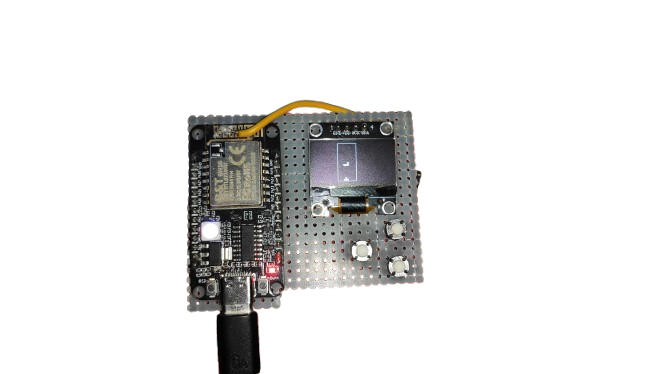
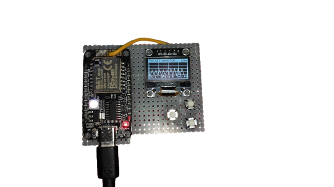
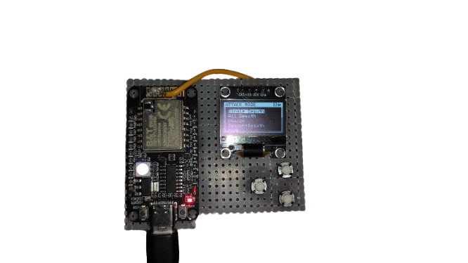

Play a classic Tetris game on the 128x64 OLED in portrait mode. Features a 10x20 grid, seven tetrominoes, and intuitive controls (UP: rotate, DOWN: drop, OK: move left). Score points by clearing lines, with a glowing effect on the active piece for a polished look.
Monitor WiFi activity with a real-time oscilloscope-style waveform. Displays APs per second, total packets, and channel information on a 128x40 grid with a glowing trace effect.
Supports single/all deauthentication and beacon attacks for security testing (use only on authorized networks). Features smooth channel switching and a responsive UI.
Toggle between English and Vietnamese for menu items and prompts, ensuring accessibility for diverse users.
Navigate a sleek main menu with zoom effects (12x12 to 16x16 icons), glowing borders (300ms), and fade transitions (~160ms) for a modern user experience.
I have updated many more games but I am lazy to write docs so you can find out for yourself.